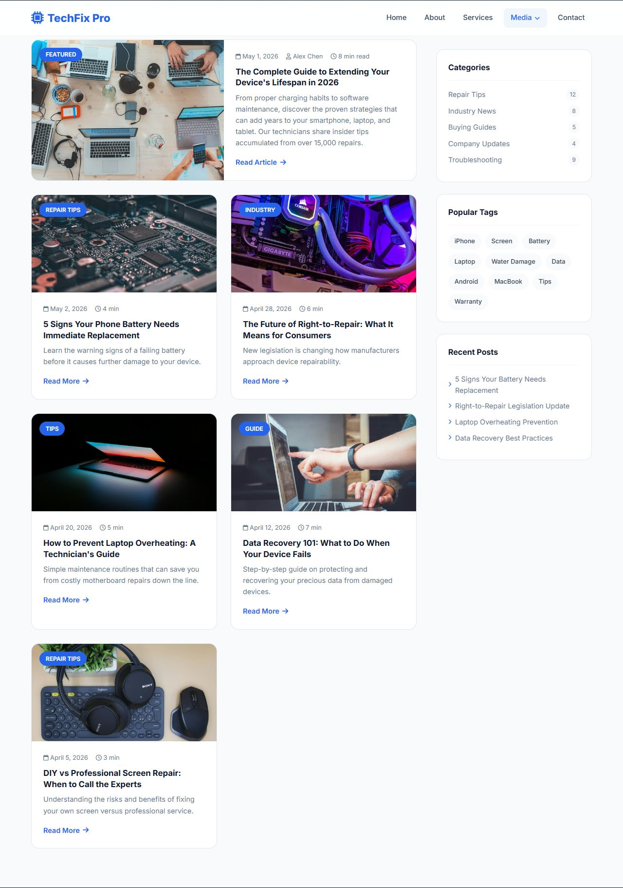
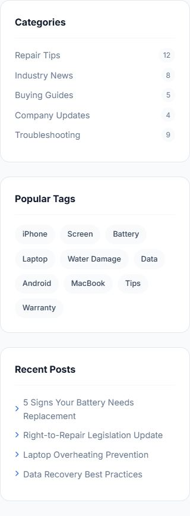
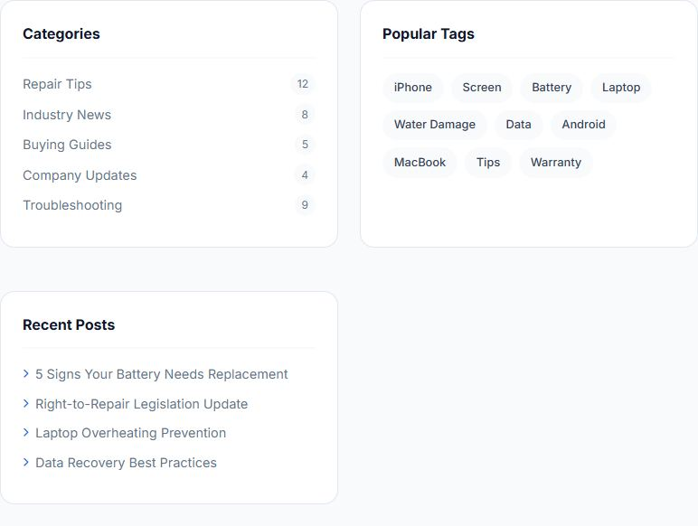
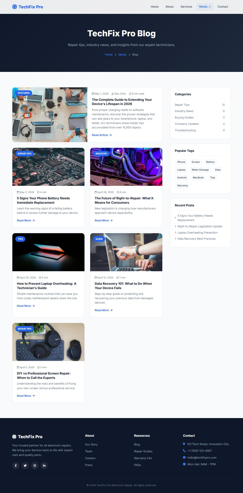

Lesson 16 · Building the Pages
The Blog Page
The Blog page is a classic magazine layout: a wide main column of article cards (including one large “featured” card) next to a sidebar of categories, tags and recent posts that sticks in place as you scroll.
- About 55 minutes
- Edits:
blog.html

By the end of this lesson you will be able to
- Build a “main content + fixed-width sidebar” layout with grid.
- Put a grid inside another grid.
- Make one grid item span two columns with
grid-column: span 2. - Make a sidebar stick while scrolling with
position: sticky. - Build a wrapping “tag cloud” with
flex-wrap.
Add the page header
Open blog.html. Replace <!-- PAGE CONTENT GOES HERE --> with:
</nav> and <!-- Footer --><header class="page-header">
<div class="container">
<h1 class="fade-in">TechFix Pro Blog</h1>
<p class="fade-in stagger-1">Repair tips, industry news, and insights from our expert technicians.</p>
<div class="breadcrumbs fade-in stagger-2">
<a href="index.html">Home</a> <i class="fas fa-chevron-right"></i> <a href="#">Media</a> <i class="fas fa-chevron-right"></i> Blog
</div>
</div>
</header>This breadcrumb has three parts: Home › Media › Blog.
Build the two-column layout
First, the outer frame. Directly above <!-- Footer -->, add:
<!-- Footer --><section class="blog">
<div class="container">
<div class="blog-layout">
<div class="blog-main">
<div class="blog-grid">
<!-- article cards go here -->
</div>
</div>
<!-- sidebar goes here -->
</div>
</div>
</section>Then the CSS (delete the placeholder comment in <style> first):
<style> block.blog { padding: 80px 0; background: var(--light); }
.blog-layout { display: grid; grid-template-columns: 1fr 320px; gap: 2.5rem; }grid-template-columns: 1fr 320px mixes units: the sidebar is exactly 320px, and the main column (1fr) takes whatever space is left.
Add the featured article
Replace <!-- article cards go here --> with:
<div class="blog-grid"><article class="blog-card featured fade-in">
<div class="blog-image">
<img src="https://images.unsplash.com/photo-1519389950473-47ba0277781c?w=800&h=500&fit=crop" alt="Featured post" loading="lazy">
<span class="blog-category">Featured</span>
</div>
<div class="blog-body">
<div class="blog-meta">
<span><i class="far fa-calendar"></i> May 1, 2026</span>
<span><i class="far fa-user"></i> Alex Chen</span>
<span><i class="far fa-clock"></i> 8 min read</span>
</div>
<h3>The Complete Guide to Extending Your Device's Lifespan in 2026</h3>
<p>From proper charging habits to software maintenance, discover the proven strategies that can add years to your smartphone, laptop, and tablet. Our technicians share insider tips accumulated from over 15,000 repairs.</p>
<a href="#" class="read-more">Read Article <i class="fas fa-arrow-right"></i></a>
</div>
</article>Add the other five articles
Directly below the featured </article>, add:
.blog-grid<article class="blog-card fade-in stagger-1">
<div class="blog-image">
<img src="https://images.unsplash.com/photo-1518770660439-4636190af475?w=600&h=400&fit=crop&q=80" alt="Phone battery" loading="lazy">
<span class="blog-category">Repair Tips</span>
</div>
<div class="blog-body">
<div class="blog-meta">
<span><i class="far fa-calendar"></i> May 2, 2026</span>
<span><i class="far fa-clock"></i> 4 min</span>
</div>
<h3>5 Signs Your Phone Battery Needs Immediate Replacement</h3>
<p>Learn the warning signs of a failing battery before it causes further damage to your device.</p>
<a href="#" class="read-more">Read More <i class="fas fa-arrow-right"></i></a>
</div>
</article>
<article class="blog-card fade-in stagger-2">
<div class="blog-image">
<img src="https://images.unsplash.com/photo-1597872200969-2b65d56bd16b?w=600&h=400&fit=crop" alt="Right to repair" loading="lazy">
<span class="blog-category">Industry</span>
</div>
<div class="blog-body">
<div class="blog-meta">
<span><i class="far fa-calendar"></i> April 28, 2026</span>
<span><i class="far fa-clock"></i> 6 min</span>
</div>
<h3>The Future of Right-to-Repair: What It Means for Consumers</h3>
<p>New legislation is changing how manufacturers approach device repairability.</p>
<a href="#" class="read-more">Read More <i class="fas fa-arrow-right"></i></a>
</div>
</article>
<article class="blog-card fade-in stagger-1">
<div class="blog-image">
<img src="https://images.unsplash.com/photo-1531297484001-80022131f5a1?w=600&h=400&fit=crop" alt="Laptop maintenance" loading="lazy">
<span class="blog-category">Tips</span>
</div>
<div class="blog-body">
<div class="blog-meta">
<span><i class="far fa-calendar"></i> April 20, 2026</span>
<span><i class="far fa-clock"></i> 5 min</span>
</div>
<h3>How to Prevent Laptop Overheating: A Technician's Guide</h3>
<p>Simple maintenance routines that can save you from costly motherboard repairs down the line.</p>
<a href="#" class="read-more">Read More <i class="fas fa-arrow-right"></i></a>
</div>
</article>
<article class="blog-card fade-in stagger-2">
<div class="blog-image">
<img src="https://images.unsplash.com/photo-1516321318423-f06f85e504b3?w=600&h=400&fit=crop" alt="Data recovery" loading="lazy">
<span class="blog-category">Guide</span>
</div>
<div class="blog-body">
<div class="blog-meta">
<span><i class="far fa-calendar"></i> April 12, 2026</span>
<span><i class="far fa-clock"></i> 7 min</span>
</div>
<h3>Data Recovery 101: What to Do When Your Device Fails</h3>
<p>Step-by-step guide on protecting and recovering your precious data from damaged devices.</p>
<a href="#" class="read-more">Read More <i class="fas fa-arrow-right"></i></a>
</div>
</article>
<article class="blog-card fade-in stagger-3">
<div class="blog-image">
<img src="https://images.unsplash.com/photo-1550009158-9ebf69173e03?w=600&h=400&fit=crop" alt="Screen repair" loading="lazy">
<span class="blog-category">Repair Tips</span>
</div>
<div class="blog-body">
<div class="blog-meta">
<span><i class="far fa-calendar"></i> April 5, 2026</span>
<span><i class="far fa-clock"></i> 3 min</span>
</div>
<h3>DIY vs Professional Screen Repair: When to Call the Experts</h3>
<p>Understanding the risks and benefits of fixing your own screen versus professional service.</p>
<a href="#" class="read-more">Read More <i class="fas fa-arrow-right"></i></a>
</div>
</article>Style the article cards
Add to the <style> block:
<style> block, below the layout CSS.blog-grid { display: grid; grid-template-columns: repeat(2, 1fr); gap: 1.75rem; }
.blog-card {
background: var(--white);
border-radius: var(--radius-lg);
overflow: hidden;
border: 1px solid var(--border);
transition: var(--transition);
}
.blog-card:hover { transform: translateY(-6px); box-shadow: var(--shadow-lg); border-color: transparent; }
.blog-card.featured { grid-column: span 2; display: grid; grid-template-columns: 1fr 1fr; }
.blog-card.featured .blog-image { height: 100%; min-height: 280px; }
.blog-image { position: relative; height: 200px; overflow: hidden; }
.blog-image img { width: 100%; height: 100%; object-fit: cover; transition: transform 0.5s ease; }
.blog-card:hover .blog-image img { transform: scale(1.06); }
.blog-category {
position: absolute; top: 1rem; left: 1rem;
background: var(--primary); color: var(--white);
padding: 0.3rem 0.8rem; border-radius: 50px;
font-size: 0.75rem; font-weight: 600; text-transform: uppercase;
}
.blog-body { padding: 1.5rem; }
.blog-meta { display: flex; align-items: center; gap: 1rem; margin-bottom: 0.6rem; font-size: 0.8rem; color: var(--gray); }
.blog-meta i { font-size: 0.75rem; }
.blog-card h3 { font-size: 1.05rem; font-weight: 700; margin-bottom: 0.5rem; line-height: 1.35; transition: color 0.3s ease; }
.blog-card:hover h3 { color: var(--primary); }
.blog-card p { color: var(--gray); font-size: 0.9rem; line-height: 1.6; margin-bottom: 1rem; }
.read-more { display: inline-flex; align-items: center; gap: 0.4rem; color: var(--primary); font-weight: 600; font-size: 0.9rem; }
.read-more:hover { gap: 0.7rem; }- A grid inside a grid:
.blog-grid(two columns of cards) lives inside the main column of.blog-layout. Grids can be nested as deeply as you like. - The featured card:
.blog-card.featured { grid-column: span 2; }makes it stretch across both columns. It also becomes a grid itself (grid-template-columns: 1fr 1fr) so its image sits beside its text instead of above it. - The rest works just like the Home page news cards (Lesson 12).
Add the sidebar
Replace <!-- sidebar goes here --> with:
<!-- sidebar goes here --> (after the closing </div> of .blog-main)<aside class="sidebar">
<div class="sidebar-widget fade-in">
<h3>Categories</h3>
<ul>
<li><a href="#">Repair Tips <span>12</span></a></li>
<li><a href="#">Industry News <span>8</span></a></li>
<li><a href="#">Buying Guides <span>5</span></a></li>
<li><a href="#">Company Updates <span>4</span></a></li>
<li><a href="#">Troubleshooting <span>9</span></a></li>
</ul>
</div>
<div class="sidebar-widget fade-in stagger-1">
<h3>Popular Tags</h3>
<div class="tag-cloud">
<a href="#">iPhone</a>
<a href="#">Screen</a>
<a href="#">Battery</a>
<a href="#">Laptop</a>
<a href="#">Water Damage</a>
<a href="#">Data</a>
<a href="#">Android</a>
<a href="#">MacBook</a>
<a href="#">Tips</a>
<a href="#">Warranty</a>
</div>
</div>
<div class="sidebar-widget fade-in stagger-2">
<h3>Recent Posts</h3>
<ul>
<li><a href="#"><i class="fas fa-chevron-right" style="font-size:0.6rem;color:var(--primary)"></i> 5 Signs Your Battery Needs Replacement</a></li>
<li><a href="#"><i class="fas fa-chevron-right" style="font-size:0.6rem;color:var(--primary)"></i> Right-to-Repair Legislation Update</a></li>
<li><a href="#"><i class="fas fa-chevron-right" style="font-size:0.6rem;color:var(--primary)"></i> Laptop Overheating Prevention</a></li>
<li><a href="#"><i class="fas fa-chevron-right" style="font-size:0.6rem;color:var(--primary)"></i> Data Recovery Best Practices</a></li>
</ul>
</div>
</aside>Then the CSS:
<style> block, below the card CSS.sidebar { position: sticky; top: 100px; height: fit-content; }
.sidebar-widget {
background: var(--white);
border-radius: var(--radius-lg);
padding: 1.5rem;
margin-bottom: 1.5rem;
border: 1px solid var(--border);
}
.sidebar-widget h3 { font-size: 1rem; font-weight: 700; margin-bottom: 1rem; padding-bottom: 0.75rem; border-bottom: 2px solid var(--light); }
.sidebar-widget ul { list-style: none; }
.sidebar-widget ul li { margin-bottom: 0.6rem; }
.sidebar-widget ul li a { color: var(--gray); font-size: 0.9rem; display: flex; align-items: center; gap: 0.5rem; transition: var(--transition); }
.sidebar-widget ul li a:hover { color: var(--primary); padding-left: 4px; }
.sidebar-widget ul li a span { margin-left: auto; background: var(--light); padding: 0.15rem 0.5rem; border-radius: 50px; font-size: 0.75rem; }
.tag-cloud { display: flex; flex-wrap: wrap; gap: 0.5rem; }
.tag-cloud a { background: var(--light); color: var(--dark-gray); padding: 0.4rem 0.8rem; border-radius: 50px; font-size: 0.8rem; font-weight: 500; transition: var(--transition); }
.tag-cloud a:hover { background: var(--primary); color: var(--white); }<aside>means “side content”.- Sticky:
position: sticky; top: 100px;keeps the sidebar in normal flow until it reaches 100px from the top of the window, then it “sticks” there while the articles keep scrolling. (100px leaves room for the 72px navbar.)height: fit-contentstops the grid from stretching the sidebar to full height, which would stop it from sticking. - Count badges: each category link is a flex row, and
margin-left: autoon its<span>pushes the number all the way to the right. - Tag cloud:
display: flex; flex-wrap: wrap;lines the tags up and wraps them onto new lines when they run out of space. - The “Recent Posts” arrows use inline styles to make them small and blue.

Make it responsive
Add at the very end of the <style> block:
<style> block@media (max-width: 1024px) {
.blog-layout { grid-template-columns: 1fr; }
.sidebar { position: static; display: grid; grid-template-columns: repeat(2, 1fr); gap: 1.5rem; }
}
@media (max-width: 768px) {
.blog-grid { grid-template-columns: 1fr; }
.blog-card.featured { grid-column: span 1; grid-template-columns: 1fr; }
.sidebar { grid-template-columns: 1fr; }
}At 1024px the sidebar moves below the articles, stops being sticky (position: static), and lays out its widgets in two columns. At 768px everything is a single column, and the featured card spans just 1 column with its image on top.


Common mistakes
- The sidebar is below the articles on desktop: the
<aside>must be inside.blog-layoutbut outside.blog-main. - The sidebar won't stick:
position: stickystops working if a parent hasoverflow: hidden, or if the sidebar is as tall as the articles. Checkheight: fit-content.